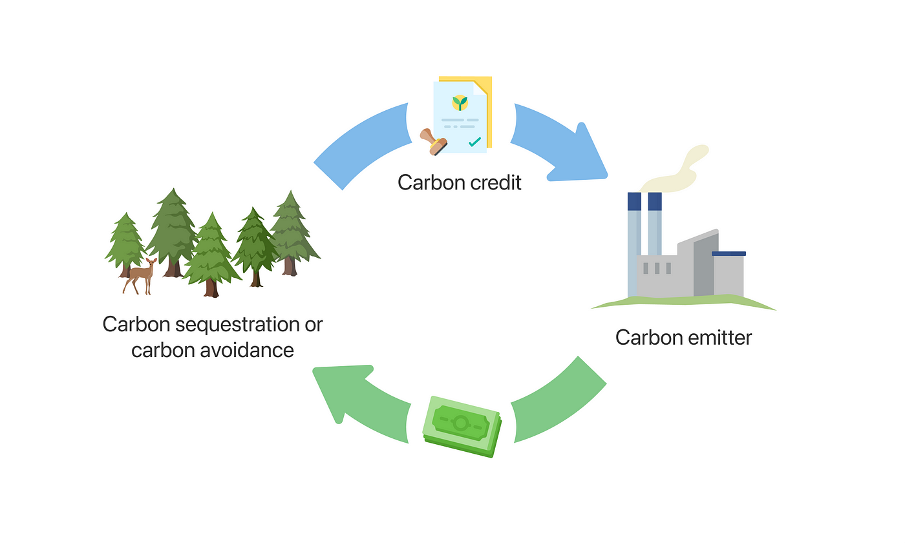
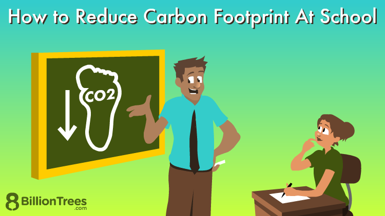

| Strategy | Advantages | Disadvantages |
|---|---|---|
| Use AI only when it adds value (skip it for things a quick search or your own knowledge can handle) | Free, immediate, and cuts energy, water, and carbon all at once | Takes self-discipline, and each person's saving is small |
| Pick a smaller model for simple tasks | Uses much less energy per request and is often faster and cheaper | Weaker on complex tasks, and it isn't always clear which model a tool is using |
| Write clear prompts and avoid retries | Fewer wasted requests and better answers | Takes practice and a little more time up front |
| Limit image and video generation | Cuts the most energy-hungry uses | Gives up some creative and professional uses |
| Choose providers that use clean energy and publish their footprint | Rewards responsible companies and pushes the industry to be more open | Claims are hard to verify, reporting is inconsistent, and the best tool may not be the greenest |
| Buy carbon offsets (pay for projects such as reforestation or renewable energy) | Easy, and covers emissions you can't avoid | Quality varies widely, benefits can be overstated or delayed, and it doesn't address water or e-waste |
| Cut emissions elsewhere in your life (drive less, waste less energy at home) | Results are real and within your control, and often larger than your AI footprint | Doesn't touch the AI impact itself, and can become an excuse to use AI carelessly |
| Support change beyond yourself (ask for transparency, back workplace or school guidelines, donate to environmental groups) | Can affect far more usage than your own | Slow, and the results are uncertain and hard to measure |
Strategies For Businesses

| Strategy | Advantages | Disadvantages |
|---|---|---|
| Set an AI usage policy (when to use AI, which tools, and for what) | Cuts wasteful use across the whole company and gives staff clear guidance | Takes time to write and enforce, and can slow teams down if it is too strict |
| Match the model to the task (smaller models for routine work, larger ones only when needed) | Lowers both energy use and cost, often with no loss in quality | Needs technical know-how to set up, and results must be tested for each task |
| Measure and report AI usage (track requests, energy, and emissions) | Shows where the biggest savings are and supports sustainability reporting | Data from providers is often incomplete, so figures are estimates |
| Choose providers on environmental performance (clean energy, water use, public reporting) | Uses buying power to push the industry toward cleaner practice | Claims are hard to verify, and the greenest provider may cost more or perform worse |
| Reduce repeat work (reuse saved answers, run large jobs together, avoid always-on automation that isn't needed) | Removes waste without changing what staff can do | Requires engineering effort, and saved answers can go out of date |
| Train staff in efficient use | Low cost, improves the quality of work, and builds lasting habits | Savings depend on people following through, and training must be repeated |
| Buy carbon offsets or clean energy | Covers the emissions that can't be avoided and is simple to arrange | Offset quality varies, it can look like greenwashing, and it doesn't address water or e-waste |
| Keep hardware longer and recycle it properly | Cuts e-waste and saves money on replacements | Older equipment is less efficient, and certified recycling can cost more |
Strategies For Schools

| Strategy | Advantages | Disadvantages |
|---|---|---|
| Teach responsible AI use (include its environmental cost in lessons) | Builds good habits early and reaches families through students | Needs room in a crowded curriculum and teachers who feel confident with the topic |
| Set clear guidelines for when AI is used in class | Limits unnecessary use and protects learning and academic honesty | Hard to enforce, especially for work done at home |
| Approve a short list of AI tools (chosen for efficiency, privacy, and openness about their footprint) | Easier to manage, safer for student data, and avoids duplicate subscriptions | Limits choice, and the list needs regular review as tools change |
| Use AI for tasks where it clearly helps (not as a replacement for thinking or basic practice) | Reduces usage while keeping students' own skills strong | Teachers and students may disagree on where the line is |
| Train teachers and staff | Staff set the example, and efficient use saves them time | Costs training time and money that many schools are short of |
| Run student-led projects (track the school's AI use, set reduction goals) | Makes the issue real, teaches data skills, and gives students ownership | Usage is difficult to measure accurately, and projects fade without staff support |
| Offset through local action (tree planting, energy saving on campus) | Visible, educational, and brings the community together | The benefit is small and slow compared with the footprint, and it can distract from reducing use |
| Keep devices longer and recycle them properly | Cuts e-waste and stretches tight budgets | Older devices may not run newer tools well |